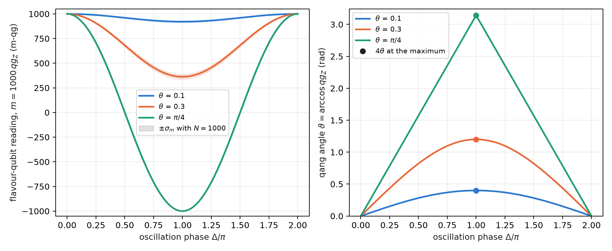
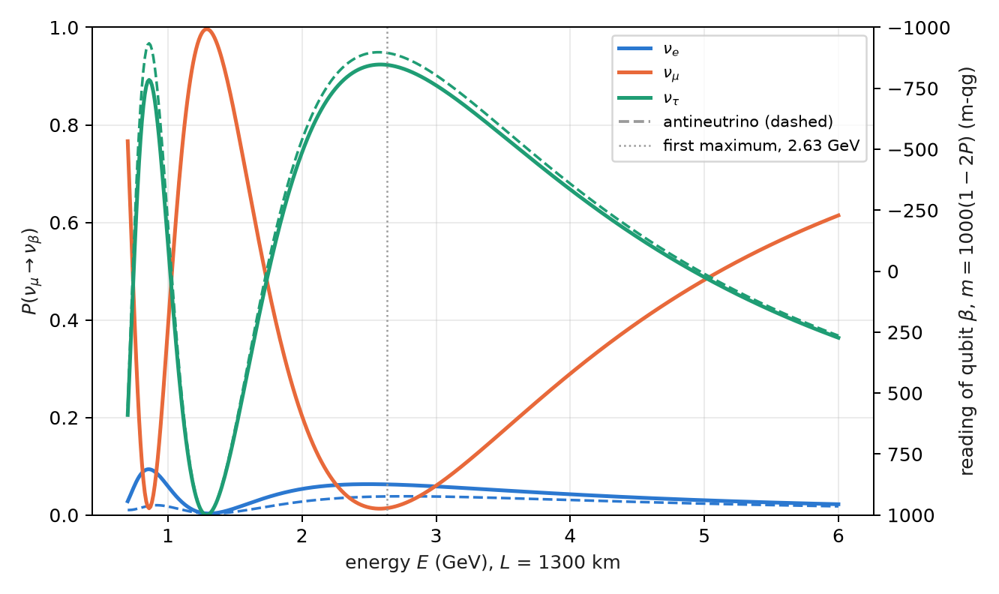
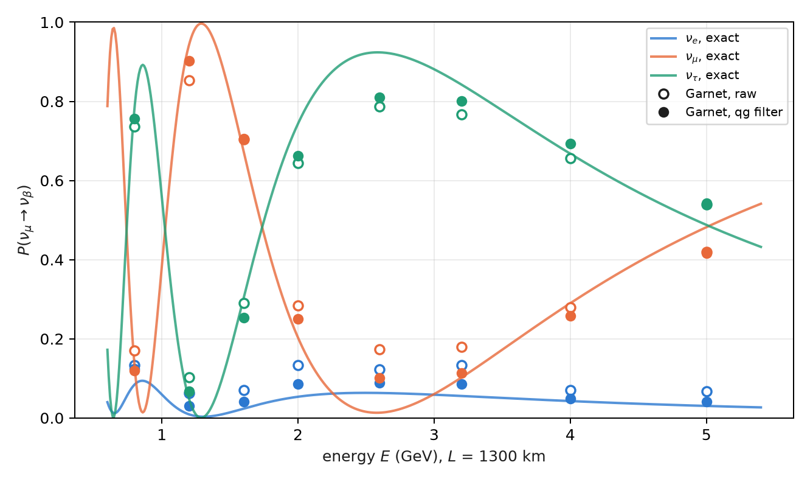

9 Quantum kinematics of flavour oscillation in vacuum
A neutrino is born and detected in a flavour state (\(\nu_e\), \(\nu_\mu\) or \(\nu_\tau\)), but it travels in mass states. Since the mass states pick up different phases, the flavour changes on the way: this is flavour oscillation, and in vacuum it is exactly a two- or three-level rotation. This chapter writes it on the base of Chapter 1. An oscillation probability is a qang probability like any other, with its angle, its milli-qang reading and its error bar; two-flavour oscillation is a precession on a cone of the sphere; and three flavours fit on three qubits with a circuit that conserves the weight, so the qg filter applies. The chapter ends with the project’s first real-hardware data point, taken on IQM Garnet.
Everything in this chapter is in vacuum. A 1300 km baseline crosses the Earth and has sizeable matter effects; those are the subject of Chapter 10.
9.1 From the base: the oscillation probability in m-qg
With two flavours on one qubit, \(|0\rangle=\nu_e\) and \(|1\rangle=\nu_\mu\), the survival probability is \(p_0=1-P\), with \(P=P(\nu_e\to\nu_\mu)\). The probability equation of Chapter 1 gives all its readings:
\[ qg_Z=1-2P,\qquad m=1000\,(1-2P)\ \text{m-qg},\qquad \vartheta=\arccos qg_Z=2\arcsin\sqrt P , \]
and its shot resolution, \(\sigma_m=1000\,|\sin\vartheta|/\sqrt N=2000\sqrt{P(1-P)}/\sqrt N\) m-qg. A 1% appearance probability is 20 m-qg; a probability difference of 0.025 is 50 m-qg. With three flavours on three qubits (below) each qubit carries the probability of one flavour and is read the same way: \(m_\beta=1000\,(1-2P_\beta)\).
The scale adds no physics: it is the same probability. What it adds is a common ruler for comparing the signal with shot noise and, as shown next, a coordinate in which the mixing angle is read directly.
9.2 Oscillation as a rotation on a cone
In the flavour basis, going to the mass basis is a rotation \(R_Y(-2\theta)\), with \(\theta\) the mixing angle; in the mass basis the two states acquire the relative phase
\[ \Delta=\frac{\Delta m^2L}{2E}=2\times1.267\,\frac{\Delta m^2[\mathrm{eV}^2]\,L[\mathrm{km}]}{E[\mathrm{GeV}]}, \]
which is an \(R_Z(\Delta)\); and returning to flavour is \(R_Y(2\theta)\). The one-qubit circuit is then \(R_Y(2\theta)\,R_Z(\Delta)\,R_Y(-2\theta)\), and its reading is (§151)
\[ qg_Z=\cos^2 2\theta+\sin^2 2\theta\,\cos\Delta,\qquad P(\nu_e\to\nu_\mu)=\sin^2 2\theta\,\sin^2\frac{\Delta}{2}. \]
The first formula is the spherical law of cosines. The mass axis is \(2\theta\) from the pole; the Bloch vector, which starts at the pole, precesses about that axis on a cone of half-angle \(2\theta\), and after turning by \(\Delta\) it is an arc distance \(\vartheta=\arccos qg_Z\) from the pole. It is the spherical triangle with two sides \(2\theta\) and included angle \(\Delta\). The qang angle of the reading is the distance travelled on the sphere (Figure 9.1).

9.3 The mixing angle is a quarter of the qang angle
At the oscillation maximum, \(\Delta=\pi\), the law of cosines reduces to \(qg_Z=\cos^2 2\theta-\sin^2 2\theta=\cos4\theta\), and therefore
\[ \theta_{\text{mix}}=\frac{\vartheta}{4}=\frac{\arccos qg_Z}{4}\qquad(\theta\le\pi/4). \]
The mixing angle is read as a quarter of a qang angle, without inverting any \(\sin^2\). It must be said precisely what this is and what it is not. It is exact only at the maximum: at any other phase the relation between \(\vartheta\) and \(\theta\) is not linear, and the trigonometry is still there. And it is not new physics: it is the arcsine transformation of a proportion from Chapter 4 (§125), which at the maximum coincides with the geometry of the cone.
The condition \(\theta\le\pi/4\) is not a detail either. For \(\theta>\pi/4\) the angle \(4\theta\) exceeds \(\pi\) and \(\arccos\) returns \(2\pi-4\theta\), that is, \(\pi/2-\theta\). Since \(\sin^22\theta\) is symmetric under \(\theta\to\pi/2-\theta\), no two-flavour measurement can tell the two values apart: this is the octant degeneracy, the same one the atmospheric angle \(\theta_{23}\) has (49° in the values used here; the reading at the maximum would give 41°). The qg scale makes it visible; it does not resolve it.
9.4 Error bars that do not depend on the angle
The qang angle inherits the stabilized variance of the arcsine transformation: its shot-noise standard deviation is \(1/\sqrt{N+\frac12}\), the same over the whole sphere (Chapter 4, §125). Divided by four:
\[ \sigma_\theta=\frac{1}{4\sqrt{N+\frac12}} , \]
which does not depend on \(\theta\). With 1000 shots it is 0.0079 rad (0.45°). Read in milli-qang, the same measurement does depend on the point: for \(\theta=0.1\) the maximum is at \(m=1000\cos0.4=921\) m-qg with \(\sigma_m=12\) m-qg. The pre-registered prediction (N1) held over 2000 binomial repetitions:
| \(\theta\) (rad) | 0.1 | 0.3 | 0.5 | 0.7 |
|---|---|---|---|---|
| mean of \(\hat\theta\) | 0.0999 | 0.2999 | 0.5000 | 0.7006 |
| std of \(\hat\theta\) (theory 0.0079) | 0.0079 | 0.0077 | 0.0078 | 0.0081 |
9.5 Three flavours on three qubits
With three flavours, flavour state \(k\) is the weight-1 state with only qubit \(k\) excited: \(\nu_e=|100\rangle\), \(\nu_\mu=|010\rangle\), \(\nu_\tau=|001\rangle\) (in qubit order 0, 1, 2). The PMNS matrix in its standard form,
\[ U=R_{23}\,U_\delta\,R_{13}\,U_\delta^\dagger\,R_{12},\qquad U_\delta=\operatorname{diag}(1,1,e^{i\delta_{CP}}), \]
is three real rotations and two phases. Each rotation \(R_{ij}\) is an RBS gate (an \(XX+YY\)) between qubits \(i\) and \(j\); each phase is a phase gate on one qubit; and propagation, in the mass basis, is one phase gate per qubit. Every gate conserves the Hamming weight, so a shot with weight other than 1 is an error and can be discarded: this is the qg symmetry filter of Chapter 21 (§77). For antineutrinos, \(\delta_{CP}\to-\delta_{CP}\) is enough. The circuit reproduces the analytic vacuum probabilities to \(10^{-15}\).
Figure 9.2 shows the case of the prediction: an initial \(\nu_\mu\), \(L=1300\) km (a DUNE-like baseline), \(\delta_{CP}=-\pi/2\) and NuFIT-like mixing values in normal ordering. The first oscillation maximum is at 2.63 GeV, where survival drops to \(P(\nu_\mu\to\nu_\mu)=0.013\), that is, \(m_\mu=974\) m-qg.

9.6 Noise suppression with the qg filter
The compiled three-flavour circuit has 18 two-qubit gates on IBM. It was run on simulated noise models of three devices (FakeBrisbane with ECR gates, FakeTorino and FakeFez with CZ), at 8 energies between 0.8 and 5 GeV with 4000 shots. The error is the mean of \(|\hat P-P|\) over the three flavours and eight energies (§151):
| simulated device | raw | readout correction | qg filter | filter + readout | kept | raw / filter + readout |
|---|---|---|---|---|---|---|
| FakeBrisbane | 0.048 | 0.038 | 0.014 | 0.013 | 85–87% | 3.8× |
| FakeTorino | 0.034 | 0.028 | 0.010 | 0.010 | 90–92% | 3.4× |
| FakeFez | 0.025 | 0.024 | 0.009 | 0.009 | 93–94% | 3.0× |
The error falls between 3.0 and 3.8 times, and almost all of the gain is the filter, not the readout correction. All four pre-registered predictions held, including the position of the minimum of \(P(\nu_\mu\to\nu_\mu)\) at 2.6 GeV on all three devices.
On real hardware (§165). The same circuit was run on IQM Garnet, a 20-qubit superconducting processor, compiled to its native gates with 12 CZ; 8 energies, 300 shots each, with predictions recorded before the job. All four held, and Figure 9.3 shows the data:
| check | result |
|---|---|
| filtered error below raw | 0.039 < 0.062 |
| ratio raw / filtered \(\ge 1.5\) | 1.59 (narrowly) |
| filtered minimum of \(P(\nu_\mu\to\nu_\mu)\) at 2.6 GeV | yes; raw puts it at 0.8 GeV |
| kept fraction \(\ge 0.5\) | 0.88 |

Three readings of this data point. On real hardware the filter puts the oscillation maximum back where it is. The chip did better than its simulated model (0.062 raw against 0.126) and so the filter gained less (1.6× against 2.2× in the rehearsal): fewer shots leave the sector, so there is less to remove. And what remains is inside the sector, where the filter cannot see: at the maximum, \(P(\nu_\mu\to\nu_\mu)\) reads 0.10 against an exact 0.013 (about 175 m-qg apart), and the \(\nu_\tau\) error barely moves (0.062 → 0.052). It is one run on one day, with 300 shots per circuit.
9.7 The CP asymmetry in vacuum
CP violation shows up as a difference between neutrinos and antineutrinos:
\[ A_{CP}=P(\nu_\mu\to\nu_e)-P(\bar\nu_\mu\to\bar\nu_e) . \]
At 2.6 GeV with \(\delta_{CP}=-\pi/2\) it is 0.0250 (0.0630 against 0.0380), that is, 50 m-qg on the \(\nu_e\) qubit. With 20 000 shots per circuit, the shot noise of the difference is about 4.4 m-qg: the signal is about 11σ. Survival, on the other hand, cannot tell them apart: in vacuum CPT imposes \(P(\nu_\mu\to\nu_\mu)=P(\bar\nu_\mu\to\bar\nu_\mu)\) (the orange curves of Figure 9.2 coincide).
| simulated device | raw | filter + readout |
|---|---|---|
| FakeBrisbane | 0.024 (48 m-qg) | 0.026 (51 m-qg) |
| FakeTorino | 0.017 (35 m-qg) | 0.022 (44 m-qg) |
| FakeFez | 0.020 (41 m-qg) | 0.022 (44 m-qg) |
The asymmetry survives even without the filter. It is the difference of two nearly identical circuits (only the sign of two phases changes), so the shift that noise produces in common cancels in the subtraction, as in the fidelity classifier of §149. What does not cancel is the contraction, which shrinks both probabilities and the difference with them: that is why FakeTorino’s raw value reads 35 m-qg and not 50. The filter halves the error on the CZ devices.
9.8 What the link between neutrinos and qang is, and is not
It is modelling: the oscillation is a rotation, and the qang angle reads the mixing angle directly at the maximum, with a known error bar. It does not remove the trigonometry in general, and it does not speed up variational methods for dense neutrino gases: those are many-body problems (Chapter 10). The limits are stated: vacuum only, fixed parameters, simulated device noise except for the single IQM Garnet run.
9.9 Without qang and with qang
| action | without qang | with qang | difference |
|---|---|---|---|
| read the mixing angle at the maximum | \(\theta=\tfrac12\arcsin\sqrt{P}\) and the delta method | \(\theta=\arccos(qg_Z)/4\), \(\sigma_\theta=1/(4\sqrt{N+\frac12})\) | same leading order: the delta method also gives \(1/(4\sqrt N)\); qang gets it without a derivative, with the \(+\frac12\) correction for few shots; at exactly \(P=0\) or \(1\) both need the intervals of Chapter 4 |
| see the octant degeneracy | symmetry of \(\sin^22\theta\) | the reading at the maximum returns \(\pi/2-\theta\) | none: the scale makes it visible, it does not resolve it |
| compare the CP signal with noise | \(\Delta P=0.025\) against \(\sigma_P\) | 50 m-qg against 4.4 m-qg | unit: the ratio (11σ) is the same |
| reduce the error of the three-flavour circuit | readout correction: little effect | weight filter: 3.0–3.8× (simulated), 1.6× on Garnet | the gain is the symmetry filter’s, not the qang scale’s |
Balance. The geometry of the cone and the reading of the mixing angle are qang’s own contribution, with an error bar that need not be derived. The improvement against noise, the chapter’s largest number, belongs to the filter.
9.10 In code
import math
from qang import neutrino as nu
# two flavours: the reading and the mixing angle at the maximum
q = nu.two_flavour_qg_z(theta=0.1, delta=math.pi) # cos(0.4) = 0.921 -> 921 m-qg
nu.mixing_angle_from_maximum(q) # 0.1
nu.mixing_angle_std(1000) # 0.0079 rad
# three flavours: exact probabilities, weight-1 circuit and CP asymmetry
P = nu.three_flavour_probabilities(L=1300, E=2.6, delta_cp=-math.pi / 2) # P[mu] = [0.063, 0.013, 0.924]
qc = nu.three_flavour_circuit("mu", L=1300, E=2.6, delta_cp=-math.pi / 2)
nu.cp_asymmetry(L=1300, E=2.6, delta_cp=-math.pi / 2) # 0.02509.11 Summary
- An oscillation probability \(P\) is read as \(m=1000(1-2P)\) m-qg, with angle \(2\arcsin\sqrt P\) and resolution \(2000\sqrt{P(1-P)/N}\) m-qg.
- With two flavours, \(qg_Z=\cos^22\theta+\sin^22\theta\cos\Delta\) is the spherical law of cosines of the precession on a cone of half-angle \(2\theta\).
- At the maximum, \(\theta=\arccos(qg_Z)/4\) with standard deviation \(1/(4\sqrt{N+\frac12})\), independent of \(\theta\); for \(\theta>\pi/4\) the reading returns \(\pi/2-\theta\) (octant degeneracy).
- Three flavours are three qubits in the weight-1 sector; PMNS is three RBS gates and two phases, and the qg filter lowers the error 3.0–3.8 times on simulated models.
- On IQM Garnet the filter gains 1.6× and puts the oscillation maximum back at 2.6 GeV; the error that remains is inside the sector.
- The CP asymmetry at 2.6 GeV is 50 m-qg and survives without the filter, because the common shift cancels in the subtraction.
Bibliographic notes
The lepton mixing matrix comes from Pontecorvo (1968) and Maki et al. (1962); the oscillation parameters used are of the type of the NuFIT global fit (Esteban et al. 2020) and the Review of Particle Physics (Navas et al. 2024). The RBS gate is that of the orthogonal networks of Landman et al. (2022). The numbered research notes (§) cited in this chapter and the scripts that check it are in the repository (Monteverde 2026a); the definition of the qang unit is in Monteverde (2026b).